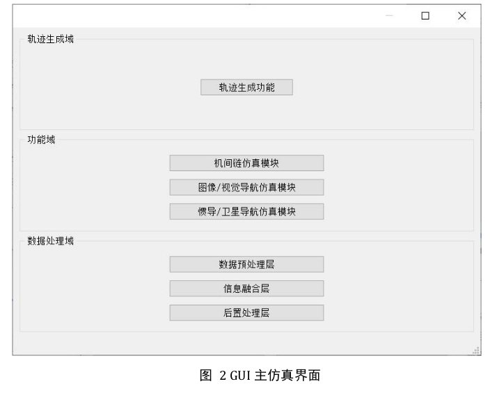
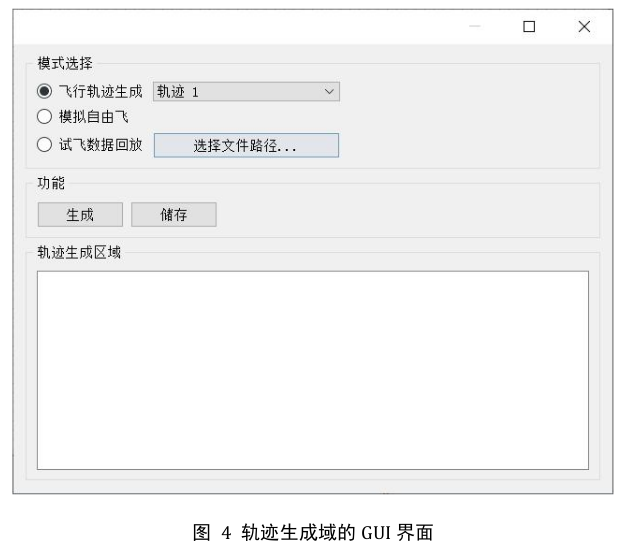
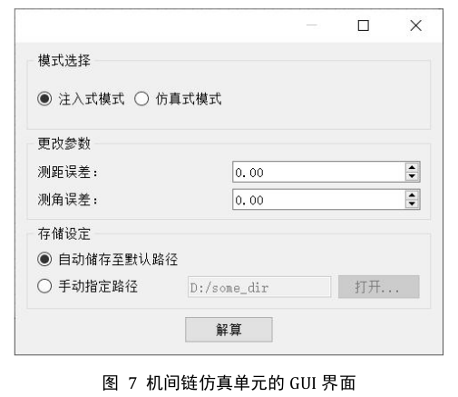
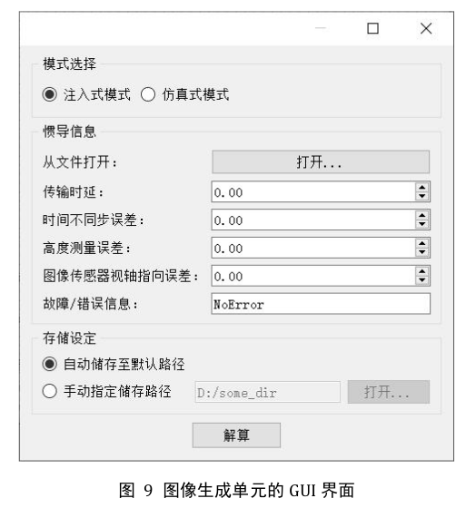
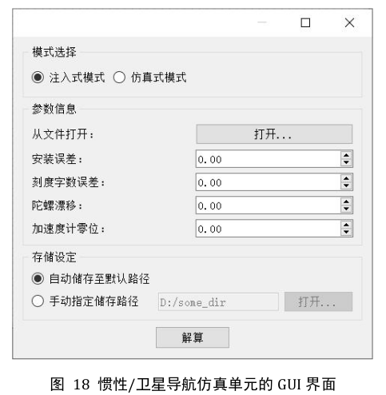
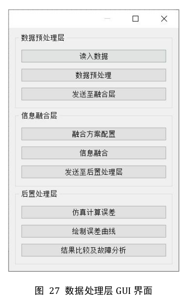

1系统概述
GeoVIO 是一套面向无人机相对导航的全数字仿真验证环境。核心功能为 视觉/惯性组合导航（Geo-VIO）：利用机载航拍影像与卫星基准图进行地理配准，结合 IMU 数据经误差状态扩展卡尔曼滤波（ESEKF）融合，实现无 GNSS 条件下的绝对定位与相对导航解算，并通过 PyQt5 图形界面完成全流程仿真与可视化。
整体功能链路
核心模块清单
| 模块 | 路径 | 功能 |
|---|---|---|
| 仿真主界面 | main_window.py | 三域组织的 PyQt5 入口，管理全部子窗口 |
| 导航流水线 | vio.py | EKFWorker 线程逐帧执行 IMU 预测 → 配准 → PnP → EKF 融合 |
| 滤波器 | ESEKF_IMU/ | 误差状态扩展卡尔曼滤波（predict / update） |
| 视觉定位 | visual_localization/ | DINOv3 粗对准、LoFTR 配准、PnP-RANSAC + LM 精化 |
| 图像预处理 | preprocessing/ | CNN 去雾（dehaze）、CLAHE/gamma 增强（enhance） |
| 相对导航 | relative_navi/ | 主从机 TCP 仿真：server 广播轨迹，client 解算相对位置 |
| 统计分析 | stats_analysis/ | 逐帧误差统计图、配准统计表、匹配结果浏览 |
2环境安装
2.1 创建 conda 环境
# 创建并激活 Python 3.10 环境
conda create -n geovio python=3.10
conda activate geovio
# 安装 PyTorch（CUDA 12.8 版本）
pip install torch==2.7.1 torchvision torchaudio --index-url https://download.pytorch.org/whl/cu128
# 安装项目依赖
pip install -r requirements.txt2.2 硬件要求
- 推荐：NVIDIA 显卡 + 支持 CUDA 12.8 的驱动，DINOv3 / LoFTR / 去雾均在 GPU 上运行。
- 无 GPU：去雾功能不可用（代码强制
.cuda()）；LoFTR 与 DINOv3 自动退化到 CPU，速度显著下降。
3数据与权重准备
3.1 数据集组织
数据集根目录由配置项 dataset_root_dir 指定（默认 dataset/），内部按下列结构组织：
dataset/
├── aerial_images/ # 航拍序列：每帧 *.tif + 同名 *.txt 元数据（GBK 编码）
│ ├── 0001.tif
│ └── 0001.txt # 经纬度、海拔、IMU、视场中心姿态角等
├── pyramid_images/ # 卫星基准图瓦片金字塔
│ └── tile_z{layer}_y{row}_x{col}.tif
├── DEM/ # 数字高程模型（匹配点高程查询）
│ └── ALPSMLC30_N018E109_DSM.tif
└── basemap/ # 可视化底图
└── L16.tif3.2 模型权重
| 权重 | 存放路径 | 用途 | 必需性 |
|---|---|---|---|
| DINOv3（dinov3-vitl16-pretrain-sat493m） | visual_localization/ckpt/ | 首帧旋转角自动估计（粗对准） | 仅当 rotation_angle: -1 时必需 |
| dehazer.pth | preprocessing/dehaze/snapshots/ | CNN 图像去雾 | 仅使用去雾功能时必需 |
| LoFTR outdoor | kornia 缓存 | 航拍图-底图配准 | 首次运行自动下载 |
.gitignore 中忽略，需另行分发。4配置文件详解
运行时默认加载 configs/base.yaml；界面菜单 设置 → 恢复默认配置文件 可重置为 configs/default.yaml。IMU 噪声参数独立存放在 configs/imu_parameters.yaml。
4.1 路径参数
| 参数 | 默认值 | 说明 |
|---|---|---|
dataset_root_dir | dataset | 数据集根目录 |
aerial_images_dir | aerial_images | 航拍图像目录（tif + txt） |
pyramid_images_dir | pyramid_images | 卫星瓦片金字塔目录 |
tif_name_format | tile_z{layer}_y{row}_x{col}.tif | 瓦片命名模板 |
dem_path | DEM/ALPSMLC30_*.tif | DEM 文件路径（高程查询） |
basemap_path | basemap/L16.tif | 可视化底图路径 |
4.2 帧范围与旋转
| 参数 | 默认值 | 说明 |
|---|---|---|
start_frame_idx | 0 | 起始帧索引（含） |
end_frame_idx | -1 | 结束帧索引（含），-1 表示最后一帧 |
rotation_angle | -1 | 航拍图相对底图的顺时针旋转角：-1 自动估计（DINOv3），或 0/90/180/270 |
4.3 相机与配准参数
| 参数 | 默认值 | 说明 |
|---|---|---|
camera_intrinsics | [232707, 0, 2372, 0, 232707, 1897] | 内参矩阵元素 fx, 0, cx, 0, fy, cy |
camera_distortion | [0, 0, 0, 0, 0] | 畸变系数 |
camera_axis_north_bias | -2.0 | 光轴北向偏移（度），用于底图裁剪中心推算 |
camera_axis_east_bias | 0 | 光轴东向偏移（度） |
clahe_clip_limit | 2.0 | CLAHE 对比度限制 |
scale_factor_crop_pyramid | 1.5 | 底图裁剪扩展倍数（>1 扩大视野余量） |
register_ransacReprojThreshold | 7.0 | LoFTR 配准 RANSAC 重投影阈值（过大易误匹配） |
register_min_inliers | 20 | 配准有效所需最少内点数 |
register_min_ratio | 0.05 | 配准有效所需最小内点比例 |
4.4 PnP 与 EKF 参数
| 参数 | 默认值 | 说明 |
|---|---|---|
pnp_ransac_reprojectionError | 8.0 | PnP-RANSAC 重投影误差阈值（像素） |
pnp_ransac_confidence | 0.99 | RANSAC 置信度 |
pnp_ransac_iterations | 500 | RANSAC 迭代次数 |
PnPRefineLM_min_inliers | 10 | 内点数超过该阈值时启用 LM 精化 |
PnPRefineLM_maxIterations | 100 | LM 精化最大迭代次数 |
ekf_sigma_p | 5 | 视觉定位量测噪声 σ（米），对应视觉定位精度 |
ekf_sigma_q | 0.015 | 姿态量测噪声 σ（弧度） |
ekf_fusion_threshold | 1000.0 | PnP 与 IMU 预测偏差的融合门限（米），超过则丢弃视觉量测 |
DEBUG | False | True 时仅处理前 30 帧，用于快速验证 |
4.5 IMU 参数（imu_parameters.yaml）
| 参数 | 默认值 | 说明 |
|---|---|---|
IMU.frequency | 1 | 采样频率 |
IMU.acc_noise_sigma | 0.019 | 加速度计连续噪声 σ（m/√s³） |
IMU.gyro_noise_sigma | 0.015 | 陀螺仪连续噪声 σ（rad/√s） |
IMU.acc_bias_sigma | 0.0001 | 加速度计偏置游走 σ（m/√s⁵） |
IMU.gyro_bias_sigma | 2.0e-5 | 陀螺仪偏置游走 σ（rad/√s³） |
Gravity | [0, 0, -9.81] | 重力向量 |
5快速启动
5.1 常规启动
conda activate geovio
python main_window.py5.2 Linux 一键启动
bash start.shstart.sh 内部直接调用 ~/miniconda3/envs/geovio/bin/python 启动主界面，无需手动激活 conda 环境。若 conda 安装路径不同，请修改脚本中的 Python 路径。5.3 首次运行检查清单
- 确认
configs/base.yaml中数据集路径、DEM、底图路径正确； - 确认 DINOv3 权重已放入
visual_localization/ckpt/（或将rotation_angle设为固定值）； - 可先设
DEBUG: True跑前 30 帧验证链路，再放开全序列。
6仿真主界面
主窗口按 轨迹生成域 / 功能域 / 数据处理域 三个域组织，每个按钮打开独立子窗口（懒加载，再次点击前置显示）。菜单栏支持界面风格（Fusion / Windows / GTK+）、字体大小（小/中/大）、深色主题切换与恢复默认配置文件。

6.1 轨迹生成域 —— 轨迹生成功能
三种模式（单选）
| 模式 | 操作 | 说明 |
|---|---|---|
| 飞行轨迹生成 | 下拉选择 轨迹 1/2/3 | 内置模板：S 形航线、环形航线、螺旋航线 |
| 模拟自由飞 | 直接生成 | 平滑随机航向累积的自由轨迹 |
| 试飞数据回放 | 「选择文件路径…」载入 CSV/TXT | 兼容 traj_esekf.csv（首列时间戳）与两列 xy 格式 |
点击 生成 在轨迹生成区域绘制（绿色起点 / 红色终点，视图可缩放）；点击 储存 保存为 CSV（默认 results/generated_traj.csv）。

6.2 功能域 —— 三个仿真单元
机间链仿真模块
- 模式选择：组网模式单选按钮；
- 更改参数：测距误差、测角误差（数值输入框）；
- 存储设定：选择结果存储目录；
- 解算：模拟解算过程（0.8–2 s 进度框），弹窗汇总参数与结果。

图像/视觉导航仿真模块（图像生成单元）
- 惯导信息：可从文件打开惯导参数（configs 目录）；参数包括传输时延、时间不同步误差、高度测量误差、图像传感器视轴指向误差；
- 故障/错误信息：下拉选择 NoError / 图像缺失 / 特征匹配失败 / 位姿解算失败 / 数据中断；
- 存储设定：结果目录；
- 解算：打开视觉/惯性融合导航窗口（NaviWindow），接入真实导航流水线。

惯导/卫星导航仿真模块
- 参数信息：可从文件打开参数（configs 目录）；参数包括安装误差、刻度字数误差、陀螺漂移、加速度计零位；
- 存储设定：结果目录；
- 解算：模拟解算并弹窗汇总参数。

6.3 数据处理域 —— 三层流水线
数据预处理层
| 按钮 | 功能 |
|---|---|
| 读入数据 | 显示航拍图像目录与帧数、底图路径（需先加载配置） |
| 数据预处理 ▾ | 下拉菜单：图像去雾（仅彩色图，输出 dehazed/）/ 图像增强（CLAHE，优先作用于去雾结果，输出 enhanced/） |
| 发送至融合层 | 登记最新预处理结果为导航输入（优先级：增强 > 去雾 > 原图），并打开信息融合层 |
combined_* 对比图，仅处理 dehazed_*。
信息融合层
| 按钮 | 功能 |
|---|---|
| 融合方案配置 | 选择 YAML 配置文件并加载，弹窗显示分辨率、帧范围、EKF 融合阈值摘要 |
| 信息融合 | 打开视觉/惯性融合导航窗口（见第 7 节） |
| 发送至后置处理层 | 检查 results/traj_esekf.csv 与 traj_gt.csv 是否就绪，就绪则打开后置处理层 |
后置处理层
| 按钮 | 功能 |
|---|---|
| 仿真计算误差 | 统计 ESEKF 定位误差（Mean/RMSE/Std/SEM）并保存分布图 |
| 绘制误差曲线 | 绘制估计轨迹 vs 真值轨迹对比图 |
| 结果比较及故障分析 | 打开配准图像浏览器 + 配准统计表两个窗口 |
7融合导航窗口（NaviWindow）
视觉/惯性融合导航主窗口：中央为可缩放卫星底图视图，叠加实时导航可视化；左上角悬浮 EKF 任务进度 标签。
7.1 工具栏功能
| 功能 | 说明 |
|---|---|
| 加载配置 | 选择 YAML 配置文件加载，底图路径变化时自动重载底图 |
| 图像去雾 / 图像增强 | 与数据预处理层相同，在后台线程批量处理并自动登记输出目录 |
| 开始导航 | 启动 EKFWorker 线程执行导航流水线；运行中变为「暂停导航 / 继续导航」 |
| 停止 | 终止 EKF 线程并复位按钮状态（开始后可用） |
| 清空 / 适应视图 | 清空轨迹与匹配画面（保留底图）/ 底图自适应窗口 |
| 匹配结果 / 配准统计 / 轨迹对比 / 误差统计 | 打开对应统计分析窗口 |
| 深色主题 / 恢复配置 / 关于 | 界面设置项 |
7.2 可视化元素
- 红色圆点：当前飞机位置（EKF 或 IMU 结果投影到底图）；
- 绿色连线：飞行轨迹 / PnP 定位点与匹配图像中心的关联线（仅视觉量测生效时绘制）；
- 半透明航拍图块：当前帧经单应变换投影到底图位置的配准画面，历史帧以更低透明度留存；
- 黄色编号：帧序号标注；
- 左上角标签：
EKF 任务进度: i/n | 状态。
8导航流水线原理
vio.py 中 EKFWorker 在独立 QThread 中逐帧处理航拍影像（*.tif + 同名 GBK 编码 *.txt 元数据），每帧执行以下流程：
8.1 配准有效性校验
LoFTR 匹配经 findHomography（RANSAC）后做四边形几何校验，任一不满足即丢弃该帧视觉量测：
- 内点数 ≥
register_min_inliers且内点比例 ≥register_min_ratio； - 投影四边形必须为凸形、面积不超底图、长宽比 ≤ 3、内角在 45°–135° 之间；
- PnP 位置与 IMU 预测距离 ≤
ekf_fusion_threshold才进行 EKF 量测更新。
8.2 融合策略
- 匹配失败 / PnP 失败 / 超门限 → 采用 IMU 预测位置，轨迹不中断；
- 视觉量测生效帧计入
n_vio，结束时打印 VIO 占比； - 所有量测均投影到首帧经纬度定义的 ENU 局部坐标系处理。
9相对导航联调（relative_navi/）
主从机 TCP 通信仿真，验证相对导航解算链路。
9.1 部署步骤
- 主从两台机器分别配置相同 conda 环境并
pip install -r relative_navi/requirements.txt； - 配置局域网保证互相 ping 通；
- 检查
server.py开头的数据文件路径：enu_datum.txt（ENU 基准点 lat lon h）与traj_esekf_out_f1.txt（轨迹：timestamp x y z qx qy qz qw）； - 修改
client.py中SERVER_IP为主机实际局域网 IP； - 先启动主机
server.py，再启动从机client.py。
9.2 启动命令
# 主机（端口 50007，0.5 s 周期广播 ECEF 位置）
python relative_navi/server.py
# 从机
python relative_navi/client.py9.3 工作原理
- server.py：逐点读取 ENU 轨迹 → 经
enu_datum基准点转 ECEF → JSON 行式 TCP 发送（{"timestamp":…, "position":[x,y,z]}）； - client.py：接收主机位置后，以随机距离（600–800 m）、方位角（110–120°）、仰角（±10°）在 ENU 系构造僚机偏移并转回 ECEF，即相对导航解算；
- 可视化：OpenCV 窗口显示主机（红点）与僚机（蓝点）相对初始位置的经纬度偏移，按 q 退出。
10结果输出
| 路径 | 内容 | 格式 |
|---|---|---|
results/traj_esekf.csv | ESEKF 估计轨迹（ENU） | 每行：timestamp x y z qx qy qz qw |
results/traj_gt.csv | GPS 真值轨迹（ENU） | 同上 |
results/register_stats.csv | 逐帧配准统计（内点数/比例/重投影误差） | CSV |
results/rot_*_*.jpg | 首帧旋转角估计可视化 | JPG |
image_matches_results/matched_points_*.npy | 逐帧 2D-3D(ECEF) 匹配点对 | npy（N×5） |
image_matches_results/ | 匹配可视化图（供结果比较浏览） | 图像 |
logs/ | 运行日志（stdout/stderr 重定向） | log |
<dataset>/dehazed/、enhanced/ | 预处理输出（去雾/增强图 + combined 对比图） | 图像 |
.gitignore 忽略。11统计分析
11.1 界面内分析（推荐）
后置处理层或 NaviWindow 工具栏直接打开：匹配结果浏览器、配准统计表（pandas 查看器）、估计 vs 真值轨迹图、误差统计分布图。
11.2 命令行脚本
cd stats_analysis
# 将 traj_esekf.csv / traj_gt.csv 拷至该目录后运行
python navi_stats_plot.py # 柱状+折线误差图，标注 Mean/RMSE/Std/SEM，输出 navi_stats_plot.png11.3 evo 轨迹评估
evo_traj tum results/traj_esekf.csv --ref results/traj_gt.csv -p12目录结构
GeoVIO-v1.2/
├── main_window.py # 仿真主界面入口
├── start.sh # Linux 一键启动脚本
├── vio.py # 视觉惯性导航流水线（EKFWorker 线程）
├── configs/ # 配置：default.yaml / base.yaml / imu_parameters.yaml
├── ESEKF_IMU/ # 误差状态扩展卡尔曼滤波器
├── visual_localization/ # 视觉定位：LoFTR 配准 + PnP 解算
│ └── ckpt/ # DINOv3 权重（自行下载，不入库）
├── preprocessing/ # 图像增强(enhance)与去雾(dehaze)
├── relative_navi/ # 相对导航 TCP 仿真（server/client）
├── stats_analysis/ # 轨迹误差统计与数据查看工具
├── ui/ # PyQt5 界面（pages/、样式表、界面样图 samples/）
├── utils/ # 解析、地理处理、可视化、配置管理
├── docs/ # 本手册
└── dataset/ # 数据集根目录（自行准备，不入库）13常见问题
| 现象 | 排查 / 处理 |
|---|---|
| 首帧旋转角估计失败或错误 | 检查 DINOv3 权重是否在 visual_localization/ckpt/；或直接在配置中将 rotation_angle 设为 0/90/180/270 |
| 大量帧配准失败 | 检查金字塔层级分辨率覆盖、视场中心姿态角与 camera_axis_*_bias；适当增大 scale_factor_crop_pyramid |
| VIO 占比低（多数帧仅 IMU） | 放宽 register_min_inliers/min_ratio，或调大 ekf_fusion_threshold；同时核对内参 camera_intrinsics |
| 去雾无效果/报错 | 去雾仅支持彩色图像且需要 GPU 与 snapshots/dehazer.pth 权重；灰度图会提示不支持 |
| 相对导航 client 连不上 | 确认主机防火墙放行 50007 端口、两机互 ping、SERVER_IP 已改为实际局域网 IP |
| 界面乱码或样式异常 | 菜单「设置 → 界面风格」切换 Fusion/Windows；字体大小可在「字体大小」菜单调整 |
| 恢复出厂参数 | 菜单「设置 → 恢复默认配置文件」重置 configs/default.yaml |